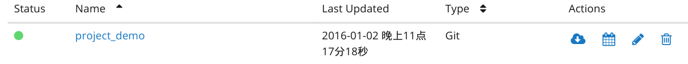
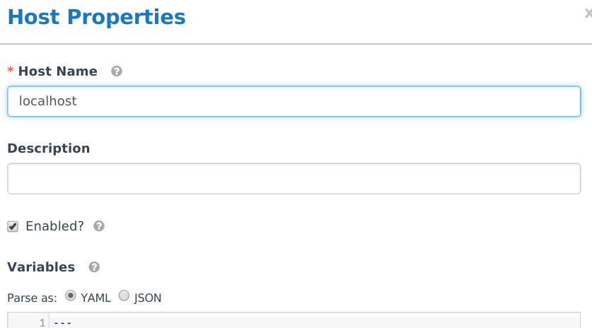

安装好后的 Tower 如下图(图1)
图1
从上面看，主要有 Projects, Inventories, Job Templates, Jobs 几个功能点。 还有一个主要的是后面的 Setup。我们一个一个来介绍下都是做什么用的。并建立起一个简单的例子
Projects 里的主要内容是一个 Playbook 的代码地址，可选项为Manual(手动指定位置)，Git, Mercutail, Subversion。
我在Github上建立了一个简单的 PlayBook。我们来创建一个新的 Project。
Name: project_demo
Organization: Default
SCM Type: Git
SCM URL: https://github.com/jeffrey4l/tower_test.git
SCM Branch: master保存就可以创建好一个Project.

在(图2)中，可以看到刚刚创建的 Project (project_demo)。后面是有4个操作按钮，分别是更新代码，定时更新，修改和删除。
基中更新代码的其实就是启了一个ansible playbook去update你在创建Project时填入的项目地址。
这里的 Inventories 和在 Ansible里的概念是一样的。在这可以创建一个若干 Inventories。每个里面可以像在 Ansible 里一样，创建机器和群组。
我们来创建一个 localhost 的机器。点击 + 号，在弹出的对话框里输入 localhost 就可以了。

在里面，还可以增加 Host 对应的变量。Group 里还可以嵌套 Group, 这和Ansible是一样的。
这里是来定义 Job 的模板。定义好后，就可以手动或自动的跑 Job 了。这之前，我们还可创建一个认证信息，用来登录机器用。
在 setup -> Credentials 里可以看到所有的认证信息。我们来创建一个基于 SSH Key的认证，用来登录 localhost, 跑我们的 project demo 项目。
Name: test
User that owns this creidential: admin
Type: Machine
Username: root
Private Key: (a generated key using ssh-keygen)并把上面的 Key 配置的本机上。
接下来，创建我们的 Job Template

创建好模板后，直接在 template 界面里点 start 就可以运行了。点击后，会跳转到 Job 运行界面。稍等一会，就可以看到运行结果了。
Tower 还有一个 Portal 模式。很方便非开发运维人员使用。左面是Job Template, 点击直接运行, 右面是运行结果。

点击「阅读原文」，能看到更多链接。